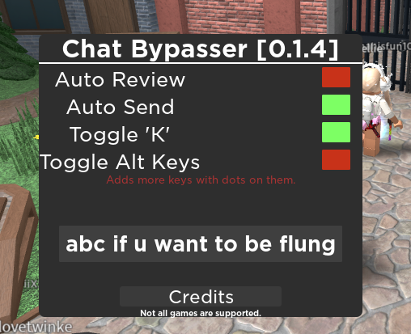

loadstring(game:HttpGet("https://raw.githubusercontent.com/BitProxy/RBLXScripts/main/chatbypasser.lua"))()
Script was made by BitProxy and several other users.
KEEP IN MIND THIS SCREENSHOT IS USING AN OUTDATED VERSION!!!
You will be prompted a bad Ui which can be destroyed when function deleteui() ran. You must enter a value into the TextBox which in the screenshot would be the "abc if u want to be flung" and press enter.